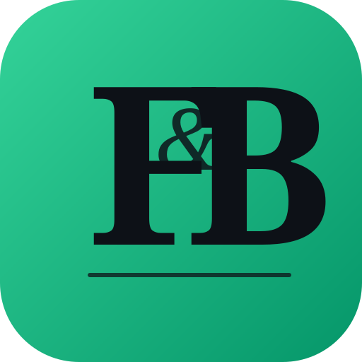
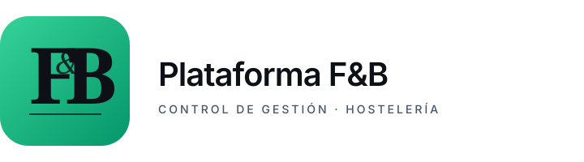
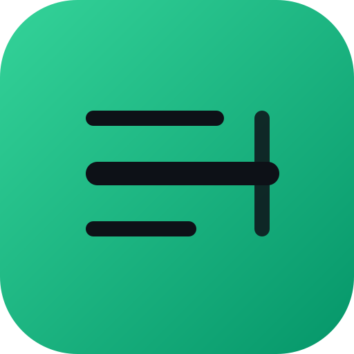
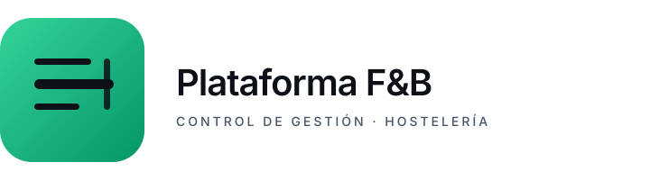
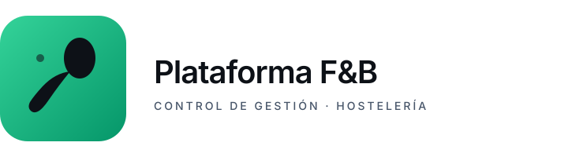
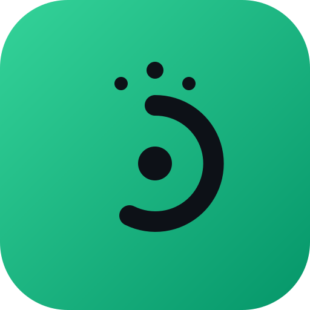
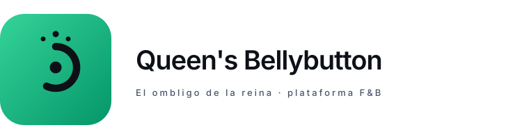

Tres direcciones de diseño distintas. Todas mantienen la paleta del proyecto (slate #0d1117 + emerald #34d399 → #059669) y todas son SVG escalables sin pérdida. Léelas pensando en dónde va a aparecer este logo más tiempo: tarjetas de visita, LinkedIn header, app icon en el móvil del director del hotel.





crisbellybutton@gmail.com),
de la planta Umbilicus rupestris que crece resistente en muros antiguos
de monasterios, y de la expresión culinaria «tener el ombligo de la reina»
que en cata clásica describe un vino o un plato perfectamente equilibrado.

